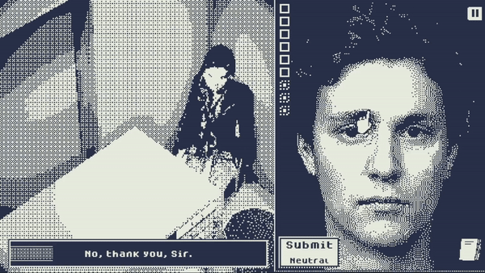
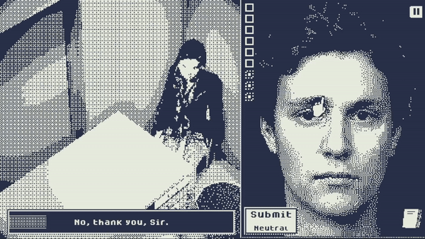

Video Games
An obvious form of horror is video games, it can be subtle psychological horror games like "Night in the Woods" to Survival Horror games like "Resident Evil". These are wonderful examples of horror because you have to be involved! Your decisions influence whether you will get a good or bad ending.
Who's Lila
 

Who's Lila is a point-and-click reverse detective game, where you can control the character's expression. In this game, you mostly play a character called William. Something strange is happening around you, and you are a suspect in Tanya's Disappearance. Throughout the gameplay, your choices are based on the character's expression. You can't help but feel unsettled as you play through.. Finding clues to what happened… who and how Lila is connected in all this.